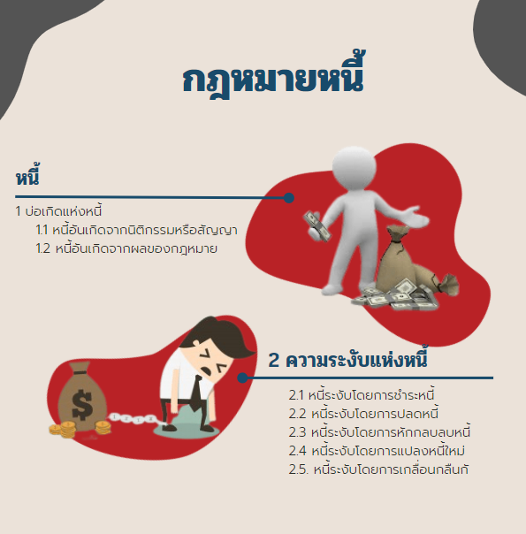

กฎหมายหนี้

หนี้
หนี้ หมายถึงผลที่เกิดจากการผูกนิติสัมพันธ์ระหว่างบุคคล 2 ฝ่าย ฝ่ายหนึ่งเรียกว่า ลูกหนี้ มีหน้าที่ต้องชำระหนี้ ซึ่งอาจเป็นการกระทำ งดเว้นการกระทำ หรือส่งมอบทรัพย์สินอย่างใดอย่างหนึ่ง ซึ่งกฎหมายเรียกว่า วัตถุแห่งหนี้ให้แก่บุคคลอีกฝ่ายหนึ่งเรียกว่า เจ้าหนี้
5.1 บ่อเกิดแห่งหนี้
บ่อเกิดแห่งหนี้ คือเหตุที่ทำให้เกิดนิติสัมพันธ์ทางกฎหมาย ก่อให้เกิดลูกหนี้ เจ้าหนี้ และวัตถุ แห่งหนี้ขึ้น ดังกรณีต่อไปนี้
5.1.1 หนี้อันเกิดจากนิติกรรมหรือสัญญา หมายถึงหนี้ที่เกิดจากเหตุแห่งการเจตนาโดย ชัดแจ้ง และมีความประสงค์จะให้เกิดหนี้เช่นนั้นขึ้น
5.1.2 หนี้อันเกิดจากผลของกฎหมาย หมายถึงหนี้ที่มิได้เกิดจากเหตุแห่งการแสดงเจตนา ของคู่สัญญา แต่กฎหมายกำหนดให้เกิดหนี้ขึ้นจากผลของการกระทำนั้น หรือที่เรียกว่า นิติเหตุ ได้แก่ การกระทําต่อไปนี้
1) หนี้อันเกิดจากการละเมิด หมายถึงหนี้ที่เกิดจากการกระทำที่อาจจะเป็นการจงใจ หรือประมาทเลินเล่อ เป็นเหตุให้บุคคลอื่นได้รับความเสียหาย ผู้กระทำละเมิดต้องชดใช้ค่าสินไหมทดแทน ให้แก่
2) หนี้อันเกิดจากการจัดการงานนอกสั่ง หมายถึงการที่บุคคลหนึ่งเข้าไปจัดกิจการ แทนผู้อื่นโดยผู้อื่นนั้นมิได้เรียกขานวานให้ทำ และไม่มีบทกฎหมายใดกำหนดให้ต้องทำเช่นนั้น หาก การที่ได้กระทำลงไปเป็นการสมประโยชน์แก่ผู้อื่นนั้นแล้ว บุคคลผู้เข้าไปจัดกิจการแทนดังกล่าว ย่อมมี สิทธิเรียกค่าใช้จ่ายที่ตนได้เสียไป เนื่องจากการดำเนินกิจการเช่นว่านั้นคืนได้
3) หนี้อันเกิดจากลาภมิควรได้ หมายถึงการที่บุคคลได้มาซึ่งทรัพย์สินใด เพราะ บุคคลอีกคนหนึ่งชำระหนี้ให้หรือได้มาด้วยเหตุประการอื่น โดยปราศจากมูลอันจะอ้างหลักกฎหมายใดๆ มารองรับได้ บุคคลผู้ได้มาซึ่งทรัพย์สินดังกล่าว จำต้องคืนทรัพย์สินนั้นให้เขาไป
4) หนี้อันเกิดจากบทบัญญัติแห่งกฎหมาย หมายถึงกฎหมายกำหนดให้บุคคลจำต้อง ปฏิบัติในบางกรณี ทำให้บุคคลดังกล่าวเสมือนหนึ่งเป็นลูกหนี้ไปโดยปริยาย
5.2 ความระงับแห่งหนี้
เมื่อเกิดหนี้ขึ้นโดยชอบด้วยกฎหมายแล้ว ลูกหนี้ก็ย่อมต้องมีหน้าที่ชำระหนี้ เพื่อให้สภาวะ การเป็นหนี้ระงับสิ้นไป ซึ่งกฎหมายได้กำหนดวิธีการไว้ดังนี้
5.2.1 หนี้ระงับโดยการชำระหนี้ หมายถึงลูกหนี้ได้ปฏิบัติตามเงื่อนไขแห่งการเป็นหนี้ให้แก่ เจ้าหนี้เสร็จสิ้น
5.2.2 หนี้ระงับโดยการปลดหนี้ หมายถึงเจ้าหนี้เป็นฝ่ายแสดงเจตนายกหนี้นั้นให้ลูกหนี้
5.2.3 หนี้ระงับโดยการหักกลบลบหนี้ หมายถึงถ้าบุคคล 2 ฝ่ายต่างก็เป็นลูกหนี้และเจ้าหนี้ ซึ่งกันและกัน โดยมีมูลหนี้เป็นวัตถุอย่างเดียวกัน ลูกหนี้ฝ่ายใดฝ่ายหนึ่งอาจหลุดพ้นจากการเป็นหนี้ ของฝ่ายตนได้ด้วยการหักกลบลบกันกับหนี้ของอีกฝ่ายหนึ่งเพียงเท่าจำนวนที่ตรงกัน
5.2.4 หนี้ระงับโดยการแปลงหนี้ใหม่ หมายถึงมีการเปลี่ยนแปลงสิ่งซึ่งเป็นสาระสำคัญแห่ง การเป็นหนี้กันนั้นและส่งผลให้หนี้เดิมระงับสิ้นไป แต่เกิดหนี้ใหม่ขึ้นแทนที่การแปลงหนี้ใหม่นี้อาจกระทำ โดยเพิ่มเติมหรือยกเลิกเงื่อนไขเปลี่ยนตัวลูกหนี้หรือเจ้าหนี้ หรือการเปลี่ยนวัตถุแห่งหนี้ เป็นต้น
5.2.5 หนี้ระงับโดยการเกลื่อนกลืนกัน หมายถึงถ้าสิทธิและความรับผิดชอบในหนี้รายใด ตกอยู่แก่บุคคลคนเดียวกัน หนี้นั้นเป็นอันระงับสิ้นไปด้วยหนี้เกลื่อนกลืนกัน
